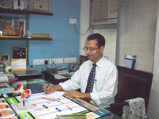

Home > Doctor Profile
Profile of the Doctor
Dr. Ajay Dudani
Is a prominent Vitreoretinal surgeon in practice since the last 12 years he is fellowship trained at sankara Nethralaya, Madras and National Nagoya Hospital Japan. He also worked with Professor Lawerence Yanuzzi in New York to learn advanced medical retinal disease management
He was practicing at Zen Eye Centre since last 7 years and now has been the managing director and founder of Mumbai Retina Centre as a focal point for managing all Retina Disease under one roof.
NAME
:
AJAY I. DUDANI
Contact Details (Res.)
:
Tel.: 26490373
Mobile: 9820149976
(Clinic)
:
MUMBAI RETINA CENTRE
101, Kirti Manor, S.V. Road,
Santacruz (w), Mumbai - 400 054
Tel. 26041065
Time 5.00 to 8.30 p.m. Mon- Sat.
ZEN EYE CENTRE
7, Rajsarovar Niketan
315 – A, Linking Road,
Above Punjab Sind Bank,
Opp. Tanishq Jewellers,
Khar (West),
Mumbai – 400 052.
Email: drajay_dudani@yahoo.co.in
DATE OF BIRTH
:
10th July, 1967
SUMMARY OF QUALIFIACTIONS
:
- M.S. (Ophthalmology), February 1994, Bombay
University. – K.E.M. Hospital. - Diplomate Of National Board (Ophthalmology),
July 1994, New Delhi. - Fellow of College of Physicians and Surgeons, FCPS (Ophthalmology), March 1994, Bombay.
- D.O.M.S. from College of Physicians and Surgeons,
Bombay, October 1992. - M.B.B.S. Seth G.S. Medical College and K.E.M.
Hospital, Bombay, October 1988
FELLOWSHIP In VITREORETINAL DISEASES
:
- Post Doctorate Vitreoretinal Fellow
Sankara Nethralaya, Chennai – 1994
Worked under Dr. S.S. Badrinath, Lingam Gopal, Tarun Sharma etal - National Nagoya Hospital, Japan - 1995.
Worked under professor Fumitaka Ando - Retina Vitreous Macula Associates Newyork 1996
Worked under professor Lawrence Yanuzzi, Richard Spaide, Yale Fisher
etal - Doheny Eye Institute
University of Southern California LA
APPOINTMENTS
VITREORETINAL
SURGEON
HONORARY
CONSULTANT
:
- Professor of Ophthmology at
K.J. Somaiya Medical College and Hospital, - Pramukh Swami Eye Hospital.
- Bombay Hospital & Research Centrel
Rotary Eye Hospital & Research Centre at the Taparia Institute of Ophthamology - Holy Family Hospital, Bandra
PROFESSIONAL EXPEREINCE
:
- I have been in private practice for the last Fifteen years as a Vitreoretinal Surgeon performing Complex vitreous and retinal Surgery Independently, including FFA, ICG, retinal laser, PDT, TTT. Etc.
- Teaching experience at K.J. Somaiya Hospital to Undergraduate and Postgraduate students.
- Surgical expertise in PVR and PDR surgery and also phacoemulsification.
HONOURS RECEIVED
:
- Asian Ophthalmologist Scholarship for Vitreoretinal Fellowship Training in Japan
- Hargobind Medical Foundation – Award
- First Prize to Ophthalmogy Quiz at the Annual
Conference of A.I.O.S. in 1996 - Scholarship for 1996, for Advanced Medical
Training abroad - Second Rank in the M.S. Examination of Bombay
University - Gold Medal at D.O.M.S. Examination
Merit Scholarship – Bombay University from 1990 To 1994 - Distinction in Pharmacology, Microbiology and Pathology in Second M.B.B.S. Examination.
- Secured First Class with Honors in Third
M.B.B.S. Examination. - Secured 80% in S.S.C. Exams. – St. Xavier’s School
- Secured 95% in H.S.C. Exams – Jaihind College.
PAPERS PUBLISHED
:
- Post Graduate Journal of Medicine,
- T.N. Journal of ophthalmology
- Bombay Ophthalmic Association Journal
- A.P.I. Text Book of Medicine – 1998 Edition
- Journal of Family Practice
- Intraocular Implant Society Journal of India
- Maharashtra Ophthamology Society Journal
- Chapters in text books of Vitreoretinal Surgery
PAPERS PRESENTED
:
- 200 papers presented as invited or free papers in the following conferences.
- American Acadamey of Ophthamology Conference
- American Society of Retinal Surgeons conference
- All India Opthalmic Society Annual Conference
- European Society retinal Surgeons
- Vitreoretinal Society of India Annual Conference
- T.N. Ophthalmic Conference
- Tokai Ganka Conference – Japan
- P.D.T. Users Meet – Turkey
- Bombay Ophthalmic Association Conferences
- Maharashtra Ophthalmic Association Conferences
- Eye Advance Conferences
- Delhi Ophthalmic Society Conferences
- International Advance Vitreoretinal Surgery course
- International Symposium on Ocular Trauma
- Also chaired and moderated various sessions In conferences.
- Invited faculty for various National and International Conferences
MEMBERSHIP
:
- American Academy of Ophthalmology
- AIOS – All India Ophthamology society
- Vitreoretinal Society India
- Maharashtra Ophthalmic Society
- Bombay Ophthalmic Association
- Consutant Association of India
- Indian Medical Association
EYE CAMP ATTENDED
:
- Chitrakut Eye Camp, November 1995
- Tara Eye Camp
- Eye Camp in Gandhidham
- Eye Camp in Vasai
INTERESTS
:
- Age Related Macular Degeneration
- Retinal transplant
- Ocular Oncology
-
Retinal Chips and Implants
-
Intravitreal Injections for eye disease
HOBBIES
:
Indian Classical Music, Yamaha Keyboard, Tabla, Lawn Tennis, Iyengar Yoga
FAMILY BACKGROUND
:
- Father (Expired)
Prof. & Head of Dept. In Oral Surgery
Bombay University, Consultant Dental Surgeon
Jaslok Hospital - Mother
Gynecologist, Retired Sr. D.M.O. C.Rly Hospital,
Presently at Holy Family Hospital, Bandra. - Brother
Electronic Engineer – Melbourne, Australia - Wife
Consultant Radiologist, DMRE, DNB – Radiology NM Medical Centre, Bandra